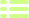

<div class="filter-bar">
    <div class="tags-filter">
        <button class="tags-filter__item all active" (click)="addActive($event)">
            Todos
        </button>
        <button class="tags-filter__item" *ngFor="let categoria of categorias" (click)="filterByCategory($event, categoria)">
            {{categoria}}
        </button>
    </div>
    <div class="change-view">
        
    </div>
</div>

<div class="card-list-grid">
    <div *ngIf="!proyectos.length">
        No existen proyectos para la categoria seleccionada
    </div>
    <div class="grid-item" *ngFor="let proyecto of proyectos">
        <article>
            <a class="card card-project" [routerLink]="['/proyectos', proyecto.titulo]" [attr.aria-label]="'Ver el detalle del proyecto de ' + proyecto.titulo">
                <div class="card-project__block" [style.backgroundImage]="'linear-gradient(transparent, rgb(0 0 0 / 75%)), url(../../../assets/images/projects/' + proyecto.titulo.toLowerCase() +'/portada/' + proyecto.portada +')'">
                    <h1>{{proyecto.titulo}}</h1>
                    <p class="categories">{{proyecto.categorias.join(' - ')}}</p>
                    <button>Acceder</button>
                    <div class="card-project__block--overlay"></div>
                </div>
            </a>
        </article>
    </div>
</div>